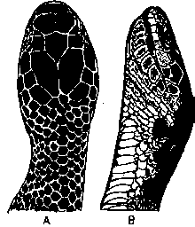

|
Digitized Inventory of Animal Resources: Reptilia ( Snakes ) Principal Investigator: Dr. R. J. B Alfred, Co-Investigator: Dr. Rama Krishna, Contributed by:
Dr. R.C.Sharma |
Bungarus andamanensis Biswas & Sanyal 1977
Taxonomic
Details
----- Scientific Name
----- Classification
----- Synonyms
----- Common Names
Other
Biological Details
----- Habit and
Habitat
----- Distribution
---------- Extent of
Occurrence
---------- Area of occurrence
---------- Altitude
---------- Population
-----
Conservation Status
-----
Diagnostic
Features
-----
Breeding system
Miscellaneous
Information
Literature
kraits
Genus . Bungarus Daudin 1803
This genus includes the snakes with following characters : Head not distinct from neck; head shields are normal; loreal shield is not available; eyes are moderately large or small, with round pupil; maxillary bone never extends, beyond the palatine; poison fangs, which are fixed, hollow maxillary teeth are followed by 2-4 small solid teeth; body scales are smooth, in 13-19 rows; vertebral row of scales are moderately enlarged in most of the species, but it is strongly enlarged in lividis; tail is moderately long, subcaudal scales are single or many of them divided; dorsal vertebrae are with strong lateral expansion, which are connected with the pre-and post-zygapophysis. About 12 species have been reported from Indonesia to Taiwan and in southern Asia, southern China, Pakistan and India.
Bungarus andamanensis Biswas & Sanyal 1977
Family :
Elapidae
Classification:
Genus . Bungarus Daudin 1803
Synonyms:
Common Names: andaman
krait
Distribution:
Altitude:
Conservation status: Rare species, known by types and six other examples.
Like B. caeruleus in general head scalation but differs in the following characters : Body scales are in 15 rows throughout; ventrals 192-200; subcaudals 40-46. It differs in general body coloration also by having a complete black dorsum, with narrow white equidistant
cross-bars, 40-46 in number on the body which are quite distinct throughout and have no vertebral spots.
The length of the body and tail is like caeruleus.
Breeding Biology :

Bungarus andamanensis Biswas &
Sanyal : Head : A. Dorsal view B. Lateral view